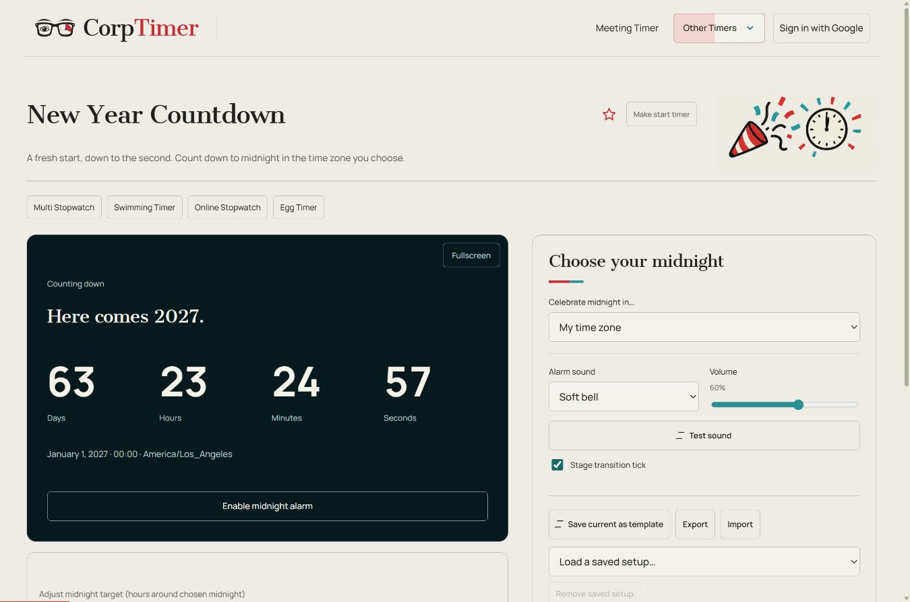

New Year Countdown
A fresh start, down to the second. Count down to midnight in the time zone you choose.
New Year
Your chosen midnight, wherever you are.
Keep this tab open. Mobile and background alarms depend on your browser and device. The countdown follows your device clock.
How it works and advice
Step by step: New Year Countdown
- Choose the time zone whose midnight you want to display. The countdown starts immediately from the device clock.
- Tap a duration number to open the circular dial. Turn clockwise to add time or counterclockwise to subtract, then Apply. You can also type a value; Close discards the draft.
- Choose an alarm and test your volume, then enable the midnight alarm for this open tab.
- Use Fullscreen for a room display. The target adjustment timeline shifts the chosen deadline; the calendar countdown continues.

When to use this timer
- Show the countdown at a party.
- Choose the time zone of friends celebrating elsewhere.
- Use fullscreen on a shared display.
How the New Year Countdown works
The New Year Countdown shows days, hours, minutes and seconds until January 1 at midnight in your selected time zone. It starts with your browser’s time zone and also offers UTC, New York, Los Angeles, London, Paris, Dubai, Tokyo and Sydney.
Choose the place whose celebration you want to follow and read the target date and time zone beneath the countdown. The target is local midnight in that zone, not midnight in every viewer’s location. A change of zone can therefore change both the remaining time and which year is next.
The countdown follows your device clock. Enable midnight alarm unlocks sound for the open tab; choose an audible sound and volume first. At the target, the page shows a New Year greeting. You can then choose to count down to the following year.
Advice for using the New Year Countdown
- Confirm the displayed city or zone before sharing a screen with people in other locations.
- Check that the device clock is correct before using the countdown for a group celebration.
- Enable and test the alarm in advance; the tab needs to remain open.
- Use fullscreen for a room display and keep the device connected to power for a long event.
- For a short toast or activity countdown, use a minute timer instead of changing the New Year target.
Useful details
Does the countdown use my time zone?
It starts in your browser’s time zone. You can select another zone, including New York, London, Dubai, Tokyo or Sydney.
Are settings synchronized with my meeting account?
These standalone tools keep their own settings and saved setups in this browser. They do not use Google/Firebase meeting synchronization. Export and import a setup to transfer it to another device.
Will this timer work if I close the page?
Keep the timer tab open. Browsers can suspend background tabs, especially on phones. Elapsed time is recalculated when the page resumes, but an alarm at the exact deadline cannot be guaranteed. Reloaded interval, stopwatch and chess sessions return paused; the New Year countdown follows its selected date and time zone.